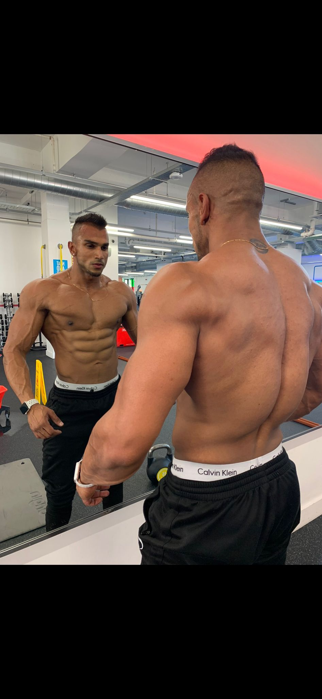

I have spent my career obsessing over the neurobiology of resilience, the mechanics of absolute strength, and the physiological foundation of executive clarity.
More is not better. Better is better. Most executives are already over-stressed. We do not add volume; we add precision. The minimum effective dose applied with maximum intensity yields the highest return.
We do not guess. We measure. Comprehensive blood panels, metabolic flexibility testing, and sleep architecture analysis form the foundation. We optimize the chemistry first.
Cognitive endurance is a downstream effect of physiological vitality. You cannot separate the executive function from the metabolic function. We train the body to serve the brain.
I do not hold hands. I set the standard, provide the architecture, and demand flawless execution. My clients are autonomous leaders—our partnership reflects that mutual respect.

My methodology is an active synthesis of clinical physiology, evolutionary biology, and elite strength conditioning.
It is tested on myself and proven on zero-margin-for-error founders and C-suite executives.